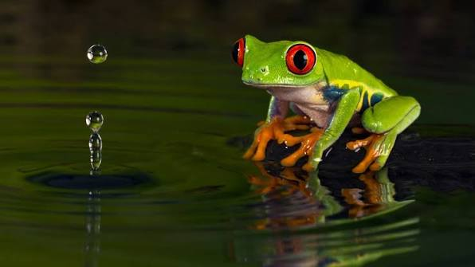

Os sapos são anfíbios pertencentes à ordem Anura, amplamente reconhecidos por seu papel fundamental no equilíbrio dos ecossistemas. Com presença em quase todos os continentes, esses animais desempenham funções ecológicas essenciais, atuando tanto como predadores de insetos quanto como presa para diversas espécies de aves, répteis e mamíferos.
Principais Características e Biologia

Metamorfose Completa:
Iniciam o ciclo de vida como girinos aquáticos, respirando por brânquias e alimentando-se de algas. Durante a metamorfose, desenvolvem pulmões, patas e reabsorvem a cauda para passar à vida terrestre.
Respiração Cutânea e Pulmonar:
Embora possuam pulmões simples, absorvem uma grande percentagem do oxigénio diretamente através da pele, que precisa de se manter constantemente húmida.